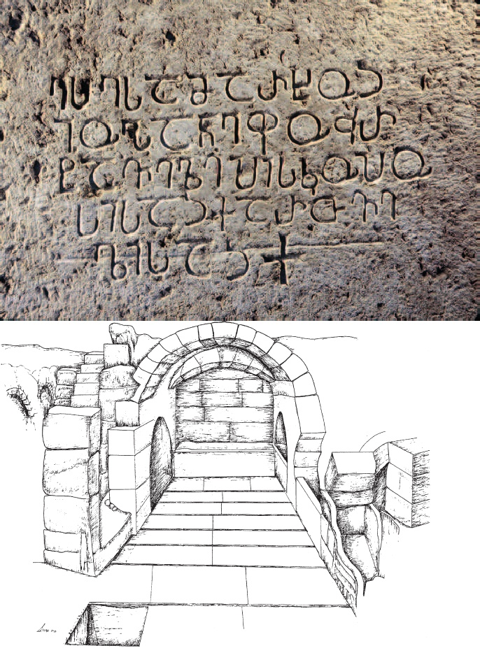

უმ ლეისუნის იოანე ეპისკოპოსის წარწერაUmm Leisun inscription
უმ ლეისუნის იოანე ეპისკოპოსის წარწერა
Umm Leisun inscription
ბიბლიოგრაფია Bibliography
კრიტიკული გამოცემა Interpretive Edition
ესე სამარხოჲ
იოჰანე ფოჳრ -
ტაველ ეპისკოპო -
სისაჲ ქართვე -
5ლისაჲ
დიპლომატიური გამოცემა Diplomatic Edition
ႤႱႤ ႱႠႫႠႰႾႭჂ
ႨႭჀႠႬႤ ႴႭჃႰ
ႲႠႥႤႪ ႤႮႨႱႩႭႮႭ
ႱႨႱႠჂ ႵႠႰႧႥႤ
5ႪႨႱႠჂ

Umm Leisun inscription
{'ka': 'ეს სამარხი (არის) იოანე ფურტაველი ეპისკოპოსის, ქართველისა'}
{'ka': 'არც ერთ არქეოლოგიურ ობიექტზე ეთნონიმ „ქართველის“ გამოყენების ამაზე ადრიანი შემთხვევა არ გვხვდება არც საქართველოში და არც წმინდა მიწაზე.', 'en': 'the earliest known example for an ethnonym ႵႠႰႧႥႤႪႨ (kartveli i.e. Georgian) on any archaeological artifact, both in the Holy Land and in Georgia.'}
<div type="edition" xml:lang="ka" ana="mtavruli" xml:space="preserve">
<ab>
<lb n="1"/><w lemma="ქრისტე"><expan><abbr>ქ</abbr><ex>რისტ</ex><abbr>ე</abbr></expan></w>
<w lemma="განსუენება"><expan><abbr>გა</abbr><ex>ნ</ex><abbr>ო</abbr><ex>ჳ</ex><abbr>ს</abbr><ex>უ</ex><abbr>ენე</abbr></expan></w>
<w lemma="სულ">სოჳ<lb n="2" break="no"/>ლსა</w>
<name nymRef="ვაჩა">ვაჩაჲს<lb n="3" break="no"/>ასა</name>
<name nymRef="გურა"><expan><abbr>გო</abbr><ex>ჳ</ex><abbr>რაჲ<lb n="4" break="no"/>სასა</abbr></expan></name>
<name nymRef="მირა"><expan><abbr>მ</abbr><ex>ი</ex><abbr>რა</abbr><ex>ჲ</ex><abbr>ს</abbr><ex>ა</ex><abbr>ს</abbr><ex>ა</ex></expan></name>
</ab>
</div>